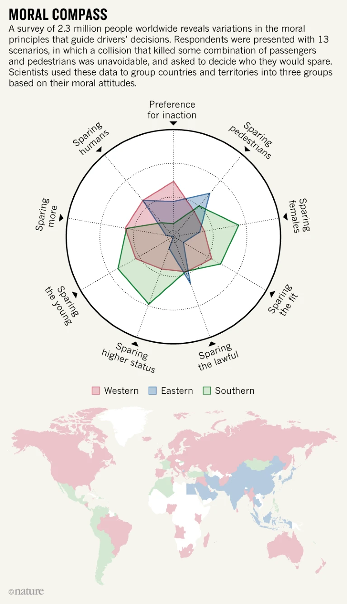
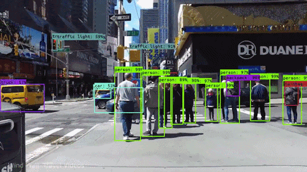
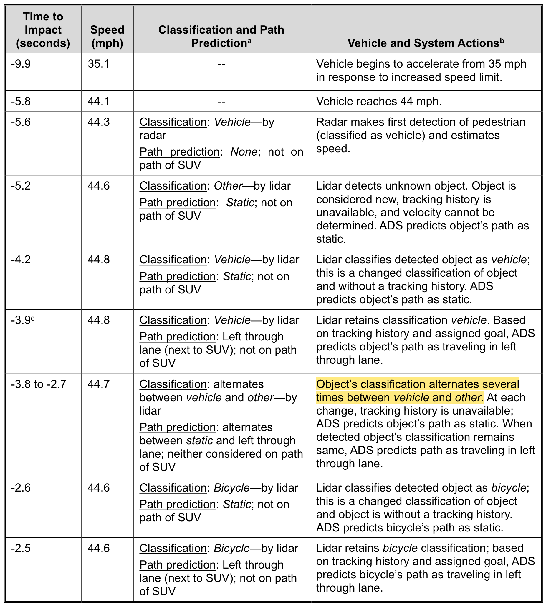
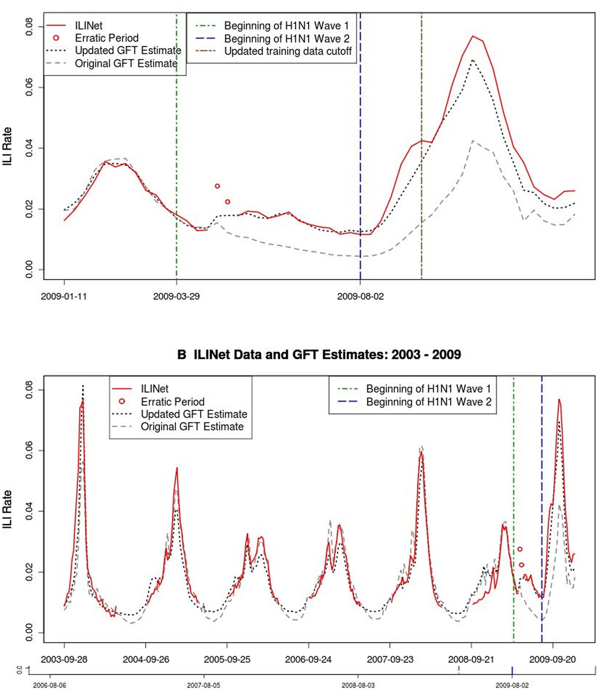
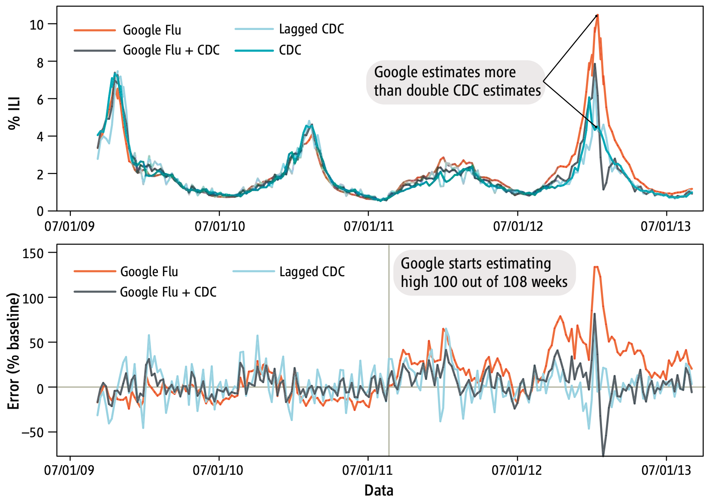
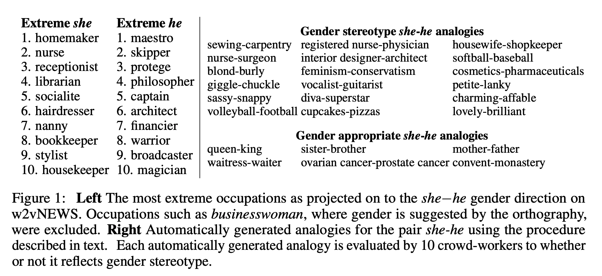
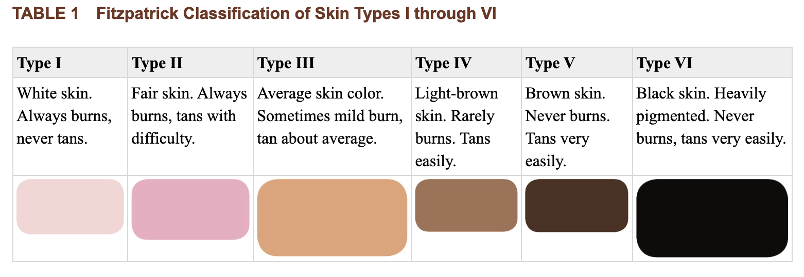

Week 7: Ethics in Algorithms
Ethics in algorithms… what does it mean?
Ethics in algorithms… what does it mean?
“Ethics in algorithms” paints a picture that we only need to consider ethics when writing algorithms.
Last week we discussed data anonymisation (and re-identification) and a lot of our conversation was about the ethics of data collection.
Is it ethical for data about us to be collected without our knowledge?
Data ethics is a might be a better term for what we’re discussing.
Data ethics includes, but isn’t limited to:
How data is collected
How data is processed (by algorithms)
How data is consumed to build products and services
How data is released
Companies are hiring data ethicists in droves.
Data ethics… you mean machine learning, big data and AI!
Machine learning, big data and AI are all tremendously exciting and definitely always require some data1.
But data ethics is important every time we’re dealing with sensitive and/or private data.
Even if we’ve got survey data about attitudes to green spaces during the pandemic.
In this course when we talk about data ethics we’re also talking about the ethics of algorithms.
In Data Science, 80% of time spent prepare data, 20% of time spent complain about need for prepare data.
— Big Data Borat (@BigDataBorat) February 27, 2013
Ethics & Moral Philosophy
Ethics & Moral Philosophy
Moral philosophy and the history of ethics is fascinating.
We’re just going to completely ignore it.
Right to privacy
Right to privacy
The Universal Declaration of Human Rights2 provides universal right to privacy.
We’re going to extend this to include right to privacy in data collection and sharing of data.
Article 12
No one shall be subjected to arbitrary interference with his privacy, family, home or correspondence, nor to attacks upon his honour and reputation. Everyone has the right to the protection of the law against such interference or attacks.
But let’s look at algorithms a little bit more first.
Self-driving cars
Self-driving cars (I)
There’s a continuum of “self-driving car” techology. For discussion purposes, let’s define the tech as follows:
A car on public roads under the control of an automated driving system that controls acceleration, breaking and driving direction. The driver does not have active control of the car, but can disengage the automated driving system and resume control.
What ethical questions does the addition of self-driving cars to existing road networks raise?
Who is responsible for a road traffic collision?
How does the automated driving system respond to trolley problem situations?
Does the car prioritise reducing risk to the driver or a pedestrian
Does the car prioritise reducing risk to other vehicles or pedestrians?
Self-driving cars (II)
Awad et al3 surveyed 2.3million people in 2018 to explore attitudes to moral dilemmas faced by autonomous vehicles.
Attitudes vary by geographic region of participants and the demographics of potential accident victims.
Should the ethical decision making of autonomous vehicles vary dependent on location?!

Self-driving cars (III)
Reliable and unbiased estimations of autonomous vehicle safety are difficult to find - and interpret.
As more autonomous vehicles are used by untrained drivers in real-world circumstances we’ll collect more information about their safety.
But it’s important we try and understand how autonomous vehicles make their decisions.
This statistic is repeated everywhere even in 2022
Self-driving cars also have an accident rate of 9.1 crashes per million miles driven – which is more than double that of regular vehicles.
It’s derived from a 2015 report5… and a total of 11 collisions.
Self-driving cars (IV)
Self-driving vehicles use many different tools for sensing and measuring their environment.
There’s considerable debate [and patent dispute] about two competing technologies: LiDAR and Computer Vision.
- Computer vision uses “regular cameras” and categorises what it sees.

- LiDAR continuously pulses UV light, measures reflection times and builds a 3D visual map. This data is then clustered and classified to identify things around the car.
Self-driving cars (IV)
As we question the ethical considerations of autonomous vehicles it’s crucial to understand how vehicles make decisions - particularly during accidents.
Does the vehicle make Fair, Accountable and Transparent (FAT) decisions?
Thankfully, both LiDAR and computer vision provide surprisingly high transparency.
This table comes from a fatal collision report6 between an autonomous vehicle and a pedestrian.
We can see the autonomous vehicle repeatedly, and inconsistently misidentified a pedestrian.

Fairness, Accountability and Transparency
Fairness, Accountability and Transparency
Since 20137 we’ve used “Fairness, Accountability and Transparency” (FAT) to discuss the ethical development and application of algorithms.
The FAT/ML conference series ran from 2014 to 2018 and is a tremendously useful resource for examples of FAT concepts for your assessment.
The definitions for these terms are slightly loose. When explaining them please use your own words and examples.
Fairness. Does an algorithm have bias or does it discriminate against individuals or a specific group?
This is usually a consequence of bias in the underlying dataset.
Accountability is concerned with the responsibility for results of decisions made that are powered or otherwise influenced by an algorithm
Transparency is concerned with how algorithms fit into a decision making process.
Fairness
Fairness: 5 (or 6) Sources of Bias
Frustratingly, I can’t find the source for this! But this list has been around since at least 20148.
Broadly in the literature (and in essays on the subject) there are 5 common sources of bias in training datasets.
These biases result in unfair treatment of individuals/groups by an algorithm. Examples of unfair treatment include
Refusal of service
More expensive services
Reduced range of services
When these services include healthcare the ramifications can be life threatening.
Proxies
Limited features
Skewed sample
Tainted examples
Sample size disparities
The assessment limits itself to these 5 sources.
It’s worthwhile mentioning that sometimes these bias is knowingly, and deliberately left (or added) to a training dataset.
This is called masking8.
I’m relying quite a bit on Alexandre’s article for dataiku.com9 and a Medium post from Cristina Goldfain10.
Fairness: Proxies
Proxies are the easiest to identify and describe of these sources of bias.
When training our algorithms we want to remove potentially biasing attributes like race, gender, age or religious belief - because we don’t want an algorithm to discriminate, disadvantage or advantage a specific group.
However, there are many other variables in a dataset that are proxies for these attributes. Can you think of any?
- Systemic racism means that income, neighborhood and similiar variables are strong proxies for race.
“Redlining is the practice of arbitrarily denying or limiting financial services to specific neighborhoods, generally because its residents are people of color or are poor.”
- Facebook friendships can be a strong proxy for sexual orientation11
Fairness: Limited Features
This is a harder bias to describe (and to verify). It’s also extremely frustrating to pin down examples.
Limited features is a consequence of having smaller datasets for minority groups, or specific combinations of sensitive attributes.
Individuals in these groups will be subject to less accurate classifications (or predictions) than other groups.
This article gives a theoretical example: https://towardsdatascience.com/sources-of-unintended-bias-in-training-data-be5b7f3347d0
Limited features is a pre-requisite for skewed samples, our next topic.
Fairness: Skewed sample (I)
It’s kind of unfair this is collected together with proxies, limited features, tainted examples, sample size disparities
Skewed samples is a bias in your algorithm when existing skewness due to limited features results in an algorithm that becomes more skewed over time - creating a biased feedback loop12. Please do read the Ensign et al’s12 paper from 2017 as it explains this really well.
Given historical crime incident data for a collection of regions, decide how to allocate patrol officers to areas to detect crime
…
Since such discovered incidents only occur in neighborhoods that police have been sent to by the predictive policing algorithm itself, there is the potential for this sampling bias to be compounded, causing a runaway feedback loop.
Fairness: Skewed sample Google Flu (I)
Another really great example with an easy to follow about the skewed samples behind issues with Google Flu’s predictive power, LAzer et al 201413
In 2009 Google published details about their Google Flu Trends (GFT) prediction engine14 that used search results to predict flu outbreaks.
The theory being that ill people search for symptoms before they would be otherwise detected.
However, the whole thing is somewhat questionable as
GFT has never documented the 45 search terms used, and the examples that have been released appear misleading15
Source: LAzer et al 201413
Fairness: Skewed sample Google Flu (II)
Coincidentally, the first big failure of the service was the 2009 A–H1N1 outbreak15.
The GFT didn’t detect the non-seasonal wave of H1N1 during the summer of 2009.
Google quickly updated the GFT algorithm later in 2009 and the improved algorithm did a better job of predicting the outbreak.

Fairness: Skewed sample Google Flu (III)
However, from 2011 onwards the GFT consistently overestimated flu outbreaks13 and became increasingly unreliable.
Lazer et al13 posit two reasons for this:
- Big data hubris
Was the algorithm a glorified winter detector?!
 Source: Lazer et al13
- Algorithm dynamic
Google has many competing algorithms at play. The service has a recommendation engine that shows potentially interesting (or useful?) search terms. Developments in the recommendation algorithm can negatively effect the GFT as “flu search terms” could be shown to healthy people.
Fairness: Tainted examples (I)
We need to talk about supervised learning.
Do you know the difference between supervised and unsupervised learning?
In supervised learning we create categories and assign training data to these categories.
The algorithm will classify all future inputs as belonging to one of these categories.
That’s all well and good if we’re doing something like classifying the titanic survival dataset.
… but often our categories aren’t absolute, eg
Google user has the flu!
Rating a driver’s likelihood of an accident
Rating a “good job candidate”
Let’s look into the job candidate example more
Fairness: Tainted examples in Recruitment (I)
Algorithms are used ubiquitously and sometimes aggressively in HR and recruitment. Fraij and László published a literature review on the topic in 202116.
These algorithms are often baked into software to automatically filter through CVs.
The algorithms are celebrated for being fast, efficient and allowing recruiters to focus on more interesting and human required tasks.
This couldn’t possibly create issues
This is an example of potential tainted example bias because there isn’t a universal truth to who is a good job candidate.
There are at least two different methods for categorising “good” candidates:
Who gets hired. And we know there are “shocking levels of discrimination in hiring”17
Work evaluation scores of recruited people. There’s strong evidence of discrimination in these scores18.
Fairness: Sample Size Disparity (I)
Unfortunately, even perfectly balanced [untainted and unskewed] training data with untainted categories can have bias. Sample size disparity is a common example of this.
Sample size disparity exists when completely balanced datasets have disparity in the size of subgroups.
This disparity results in unfair behaviour of the algorithm when applied to real-world datasets.
The most widely cited (and easy to follow) example of this is the Nymwars of 2011 - https://en.wikipedia.org/wiki/Nymwars.
Fairness: Sample Size Disparity (II)
In 2011 Google implemented a real name policy for Google+.
There are significant privacy issues with this policy.
But users also found their names rejected as “not real”.
Folks with names outside of the first and last name pattern - eg Charlie Hadley - found their names rejected.
This is widely blamed on the training datasets having sample size disparity - there were fewer instances of other name forms.
I recommend reading this article Falsehoods Programmers Believe About Names – With Examples19.
… some more case studies
“Man is to computer programmer as woman is to homemaker” (I)
In 2016 Bolukbasi et al20 demonstrated how the extremely common word2vec algorithm shows significant gender-bias.
word2vec is a patented algorithm21 that - when trained on a given text corpus - will find similar/synonymous words for a given input.
Google provides a useful introduction to how the system works.
For example, if you enter ‘france’, distance will display the most similar words and their distances to ‘france’, which should look like:
| word | cosine.distance |
|---|---|
| spain | 0.678515 |
| belgium | 0.665923 |
| netherlands | 0.652428 |
| italy | 0.633130 |
| switzerland | 0.622323 |
| luxembourg | 0.610033 |
| portugal | 0.577154 |
| russia | 0.571507 |
| germany | 0.563291 |
| catalonia | 0.534176 |
“Man is to computer programmer as woman is to homemaker” (II)
word2vec is pre-trained on ~100 billion words from Google News articles.
Some users of the alogirthm will use the pre-trained corpus, others will use their own.
Bolukbasi et al20 investigated how the algorithm behaved with the pre-trained corpus, with the assumption:
[the data would] exhibit little gender bias because many of its authors are professional journalists

“Man is to computer programmer as woman is to homemaker” (III)
What sources of bias are included in this example?
Proxies
Limited features
Skewed sample
Tainted examples
Sample size disparities
Racial bias in photography (I)
Smartphone manufacturers have recently started advertising how their devices accurately photograph the beauty of all skin tones22.
This has been a known issue in photography for decades, in many different situations.
In pre-digital photography days, Kodak issued “Shirley cards” for colour-balancing images. These cards exclusively contained Caucasian models until the 1990s.
Source: Lorna Roth 200923
Racial bias in photography (II)
This issue has also been pervasive in digital photography.
The continued use of the Fitzpatrick skin tone scale is largely to blame.
Dr. Ellis Monk’s research24 has culminated in the Monk Skin Tone Scale with evidence improvements in processing of images compared to the Fitzpatrick scale.

Source: Ward et al25
Racial bias in photography (III)
I’d like to recommend some additional resources to learn about this:
Vox Media’s video essay Color film was built for white people. Here’s what it did to dark skin.26.
Lorna Roth’s research paper Looking at Shirley, the Ultimate Norm: Colour Balance, Image Technologies, and Cognitive Equity23
Google’s Skin Tone Research with Dr. Ellis Monk.
Racial bias in face analysis (I)
This is a fundamental problem in all face analysis and face detection software.
Joy Buolamwini does a much better job of explaining this in 5 minutes than I can.

Source: gendershades.org28
Racial bias in face analysis & photography
What sources of bias are included in this example?
Proxies
Limited features
Skewed sample
Tainted examples
Sample size disparities
Accountability & Transparency
Accountability & Transparency
These two terms are used interchangeably and confusingly. That’s okay. In the assessment discuss how these two concepts relate to one another and you’ll be fine.
There’s a really useful definition given by the EU “governance framework for algorithmic accountability and transparency”29
The primary role of transparency is identified as a tool to enable accountability. If it is not known what an organisation is doing, it cannot be held accountable and cannot be regulated.
…
An important difference between transparency and accountability is that accountability is primarily a legal and ethical obligation on an individual or organisation to account for its activities, accept responsibility for them, and to disclose the results in a transparent manner.
… but the rest of the document is very heavy reading.
Accountability
For a more thorough exploration of accountability I recommend reading Caplan et al30.
Transparency and gaming the system
It’s worthwhile mentioning that transparency can result in “gaming the system” in which an algorithm is applied:
Also, in some cases, transparency may lead to groups and individuals “gaming the system.” For example, even the minimal openness surrounding how the trending feature on Twitter surfaces topics has allowed it to be manipulated into covering certain topics by bots and coordinated groups of individuals. Therefore, different contexts may call for different levels of transparency.
Source: Caplan et al 201830
- How else could we game algorithms?
Other sources of unfairness
Other sources of unfairness
Earlier we tried to categorise sources of bias:
-Proxies
-Limited features
-Skewed sample
-Tainted examples
-Sample size disparities
These are almost always concerned with the training data behind algorithms.
There’s a whole universe of ways we can bias an algorithm by how it’s applied.
Let’s look at some of these!
Fairness and Abstraction in Sociotechnical Systems
Selbst et al published an excellent paper in 201931 on “abstraction traps”.
These traps are designed to help us account for the interactions between the technical systems behind our algorithms and the social world in which they’re applied.
I think they’re really useful and give us further context for our discussion of fairness.
The next several slides explores these traps.
Selbst Abstraction: The Framing Trap
Failure to model the entire system over which a social criterion, such as fairness, will be enforced
Example:
In the US criminal justice pipeline algorithmically trained risk assessment tools are used to predict the “risk” of a defendant and determine of parole is awarded.
<br
However - usually this is the risk the defendant fails to appear at court hearings. Reoffending is only occassionally considered in these models.
These risk assessment tools are presented only as recommendations to judges. They do not account for consistently (see31) different consideration between judges.
The intended appliction of the algorithmally trained risk assessment does not take into account their use by judges and therefore the apparent fairness cannot be measured
Selbst Abstraction: The Portability Trap
Failure to understand how repurposing algorithmic solutions designed for one social context may be misleading, inaccurate, or otherwise do harm when applied to a different context
Here’s a really nice quote
Within computer science, it is considered good practice to design a system that can be used for different tasks in different contexts. “But what that does is ignore a lot of social context,” says Selbst. “You can’t have a system designed in Utah and then applied in Kentucky directly because different communities have different versions of fairness. Or you can’t have a system that you apply for ‘fair’ criminal justice results then applied to employment. How we think about fairness in those contexts is just totally different.”
Source: Karen Hao32
Selbst Abstraction: The Formalism Trap
Failure to account for the full meaning of social concepts such as fairness, which can be procedural, contextual, and contestable, and cannot be resolved through mathematical formalisms
I did promise we would ignore moral philosophy, but it’s important for a moment.
Fairness and discrimination are complex concepts that philosophers, sociologists, and lawyers have long debated. They are at times procedural, contextual, and politically contestable, and each of those properties is a core part of the concepts themselves31
In algorithmic recruitment practices we don’t particularly mind about false positives (candidates who aren’t a good fit) because there’s an interview to filter them out.
However, the justicial risk assessments mentioned earlier might require the opposite treatment. False positives will result in parole being refused.
Selbst Abstraction: The Ripple Effect Trap
Failure to understand how the insertion of technology into an existing social system changes the behaviors and embedded values of the pre-existing system
Selbst et al31 depend entirely on the justicial risk assessments example for this. Their increased use focuses the intent of the justice review system to incapacitation.
Selbst Abstraction: The Solutionism Trap
Failure to recognize the possibility that the best solution to a problem may not involve technology
Modeling requires pinning down definitions. Code calcifies. When fairness is a politically contested, movable issue, a model may not be able to capture the facets of how it moves
COMPAS: Algorithmic risk assessments
COMPAS: Algorithmic risk assessments
The algorithmic risk assessment algorithm we’ve discussed is called COMPAS.
It’s been subject to intensive study.
ProPublica’s study in 201633 was one of the first investigations. A technical breakdown of this is provided by the same authors34.
The algorithm performs worse than 400 random Mechanical Turk users35.
I’d like to show you Hany Farid’s TED tak on this topic36.
Inequality vs Justice
Inequality vs Justice
I thought it was important to not skip over the continuum beyond inequality and justice. These cartoons are from John Maeda’s presentation on Design in Tech Report 201937 and designed by Tony Ruth.

We have to stop somewhere
We have to stop somewhere
We’ve covered more than enough for your assessment and to get a feel for the complexities of ethics in algorithms.
We didn’t really discuss data privacy very much. I’d recommend reading about the OECD Fair Information Practices.